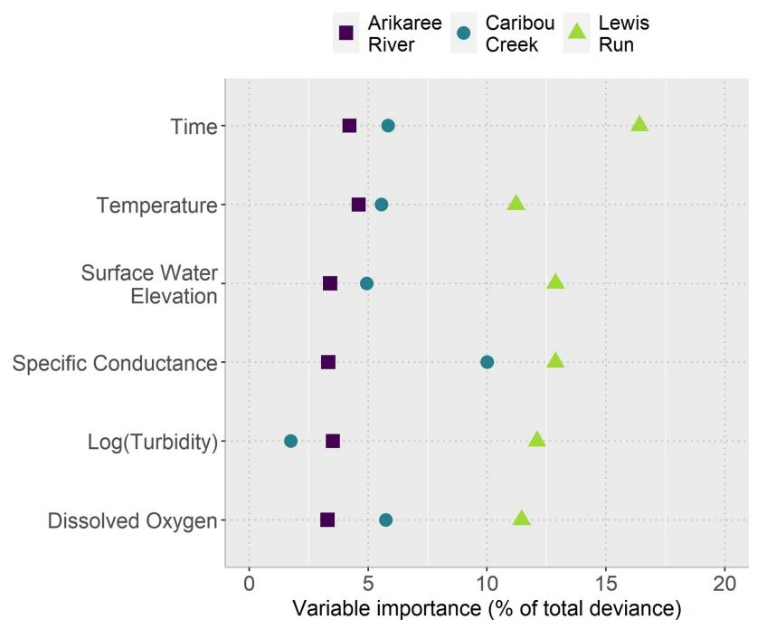

| Variable | Meaning | WhyItMatters |
|---|---|---|
| Temperature | Water warmth | Affects biological activity and nitrate conversion rates. |
| Turbidity | Water cloudiness | Indicates sediment and nutrient presence; higher turbidity often means more suspended particles that carry nitrate. |
| Conductivity | Ability to conduct electricity | Reflects dissolved ions and materials in water, which often correlate with nutrient loads. |
| Dissolved Oxygen | Oxygen level in water | Related to microbial processes that consume or transform nitrate. |
| Surface Water Elevation | River height | Influences flow, dilution, and mixing, which affect nitrate concentration. |
Exploring how a handful of variables can tell the story of a river’s changing chemistry.

When Rivers Tell Stories: What Controls Nitrate Levels?
If you’ve ever stood by a river and wondered how clean that water really is — you’re not alone. Nitrate, a common compound found in fertilizers, quietly flows through rivers around the world. When its levels get too high, ecosystems suffer and water treatment costs soar.
Traditionally, tracking nitrate means sending people out to collect water samples, shipping them to labs, and waiting for results. It’s slow, costly, and often misses the real-time ups and downs that matter most.
But what if we could understand how nitrate changes just by watching a few key signals — like temperature or water clarity — from sensors already sitting in the river?
That’s exactly what a recent study explored: whether smart modelling and a few well-chosen measurements could explain nitrate dynamics almost perfectly — and do it affordably.
Seeing Patterns Beneath the Surface
This blog is based on the study Kermorvant et al. (2023), which provides the main foundation for the discussion here. The analysis draws on data from National Ecological Observatory Network (NEON) (2019), collected between 2018 and 2019 at three NEON river sites in Colorado, Alaska, and Virginia.
Using a combination of GAM (Generalized Additive Models) and GAMM (which incorporates temporal correlation), the researchers developed a modelling framework that was able to explain nearly 99% of the variation in nitrate concentration. The result is both methodologically elegant and practically efficient, showing how relatively simple models can capture complex biogeochemical processes with remarkable precision.
That’s nearly perfect — but what’s even more interesting is how it worked.
Across all sites, five water-quality variables consistently told the story, as shown in the following table (Table 1) which presents their specific meanings.
🌡 Temperature
🌫 Turbidity
⚡ Conductivity
💨 Dissolved oxygen
🌊 Surface water elevation
Even though these five factors mattered everywhere, their influence varied from site to site. For instance, in one river, short-term memory — the river’s own recent history — played a big role; in another, the physical conditions dominated.
In other words, rivers share some “universal rules,” but each has its own accent. Figure 1 shows how each variable contributes differently across the three sites. At Arikaree, for instance, the autoregressive term accounts for roughly 25% of the variation in nitrate, whereas at Lewis Run, all five variables play a substantial role. This contrast highlights that reliable monitoring depends not only on the common drivers shared across rivers, but also on local conditions that shape how each variable matters. Overall, these results illustrate that while some patterns are universal, local context can strongly influence the relative importance of each factor.

Smarter Monitoring, Better Decisions
The main takeaway is clear: it is not necessary to measure every variable at every site at all times.
By concentrating monitoring efforts on a small set of key indicators — specifically temperature, turbidity, conductivity, dissolved oxygen, and water level — environmental agencies can develop monitoring programs that are both cost-effective and high-frequency. Such programs are capable of capturing the dynamic behavior of rivers with sufficient accuracy, without expending resources on less informative measurements.
Now, we can finally return to the question in Section 1 — and see that a relatively small set of well-chosen measurements is indeed enough to reveal the patterns that govern nitrate dynamics.
In a context of limited budgets and increasing environmental pressures, this approach represents an efficient balance between scientific rigor and practical feasibility. It allows agencies to maintain reliable oversight of water quality while directing resources where they have the greatest impact, contributing both to sustainable management and to informed, data-driven decision-making.
References
Kermorvant, Claire, Benoit Liquet, Guy Litt, Kerrie Mengersen, Erin E. Peterson, Rob J. Hyndman, Jeremy B. Jones, and Catherine Leigh. 2023. “Understanding Links Between Water-Quality Variables and Nitrate Concentration in Freshwater Streams Using High Frequency Sensor Data.” PLOS ONE 18 (6): e0287640. https://doi.org/10.1371/journal.pone.0287640.
National Ecological Observatory Network (NEON). 2019. “Air, Water, and Biological Data from NEON River Sites (2018–2019).” https://data.neonscience.org.